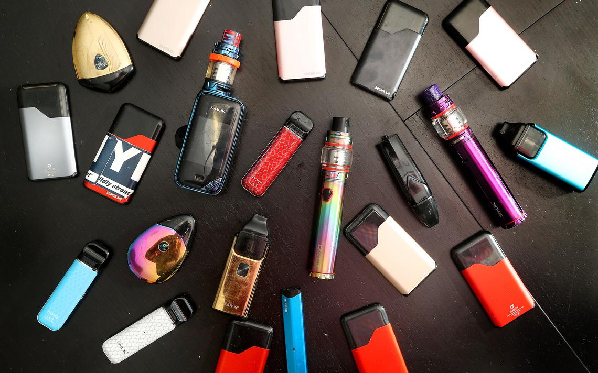

ANTI-SMOKING
By Yuxin Pan
NEGATIVE imapcts: Smoking dramatically increases your chances of lung cancer, heart disease, diabites, liver cancer, ectopic pregnancy vision loss, tuberculosis, rheumatoid arthritis, colorectal cnacer, stroke, baldder caner, etc. ( informations form "Cancer Council")
In the United States 480,000 people died because of cigarette smoking per year, including more than 41,000 deaths resulting from secondhand smoke exposure. On average, smokers DIE 10 yearsearlier than nonsmokers.
What happen AFTER stop smoking?
- Stop smoking for 20 minutes: your heart rate, and blood presure drop.
- 12 hours: carbon monoxide in the bloodstream drops to normal.
- Half month-3 months: circulation, lung function improves; Chances of have heart attack begings to decrease.
- 1-9 months: cought less and breath easier.
- 1 year: risk of cornary heart disease cut in half.
- 2-5 years: risk of cancer of mouth, throat, esophagus, bladder cut in half, stroke risk is reduced to that of nonsmoker.
- 10 years: the chances of die from lung cancer, getting kidney or pancereatic cancer decreases 50%.
- 15 years: risk of coronary heart disease same as nonsmoker's risk.
Is vaping safe?

E-cigarettes heat nicotine (extracted from tobacco), flavorings and other chemicals to create a water vapor that you inhale. Regular tobacco cigarettes contain 7,000 chemicals, many of which are toxic. While we don’t know exactly what chemicals are in e-cigarettes, Blaha says “there’s almost no doubt that they expose you to fewer toxic chemicals than traditional cigarettes.”
However, there has also been an outbreak of lung injuries and deaths associated with vaping. As of November 2019, the Centers for Disease Control and Prevention (CDC) confirmed 47 deaths in patients with e-cigarette, or vaping, product use associated lung injury (EVALI).
Both e-cigarettes and regular cigarettes contain nicotine, which research suggests may be as addictive as heroin and cocaine. What’s worse, says Blaha, many e-cigarette users get even more nicotine than they would from a tobacco product — you can buy extra-strength cartridges, which have a higher concentration of nicotine, or you can increase the e-cigarette’s voltage to get a greater hit of the substance.
Resources from
Michael Joseph Blaha, M.D., M.P.H.
image by Jeremy fugleberg, The Daily Repblic.
Lungs said:"I LOVE OXYGEN! NOTHING CAN BE BETTER THAN OXYGEN!"